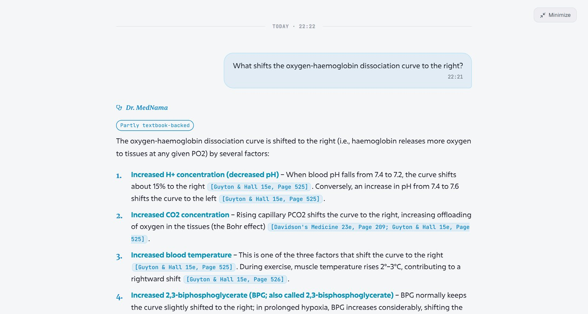
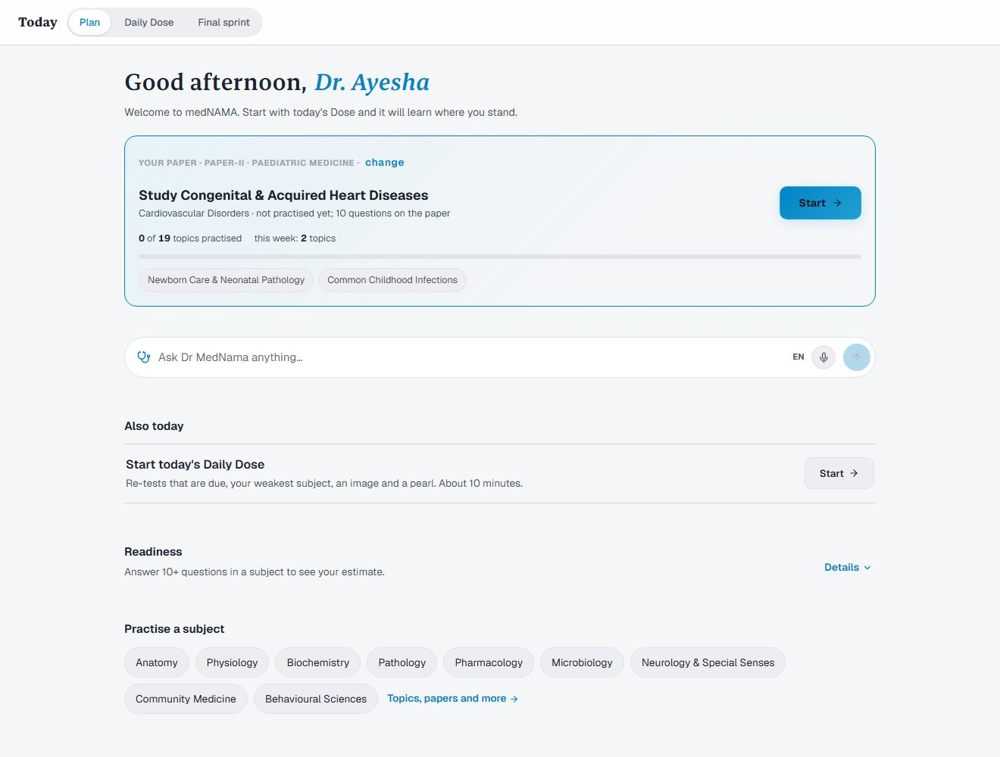
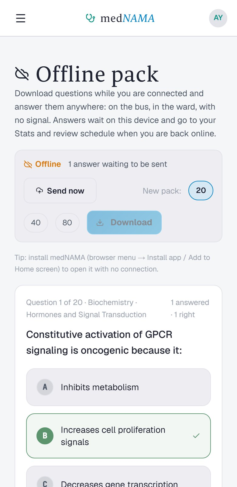
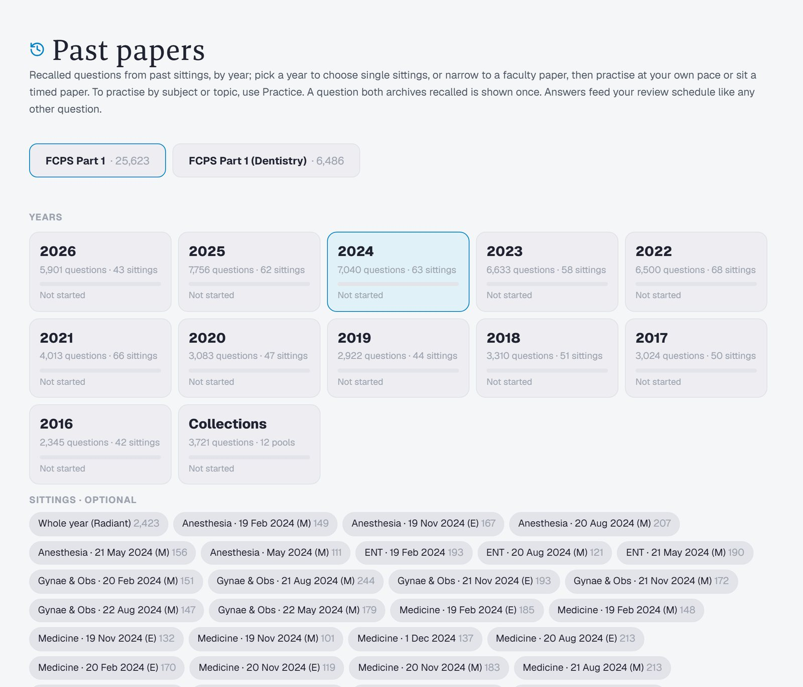
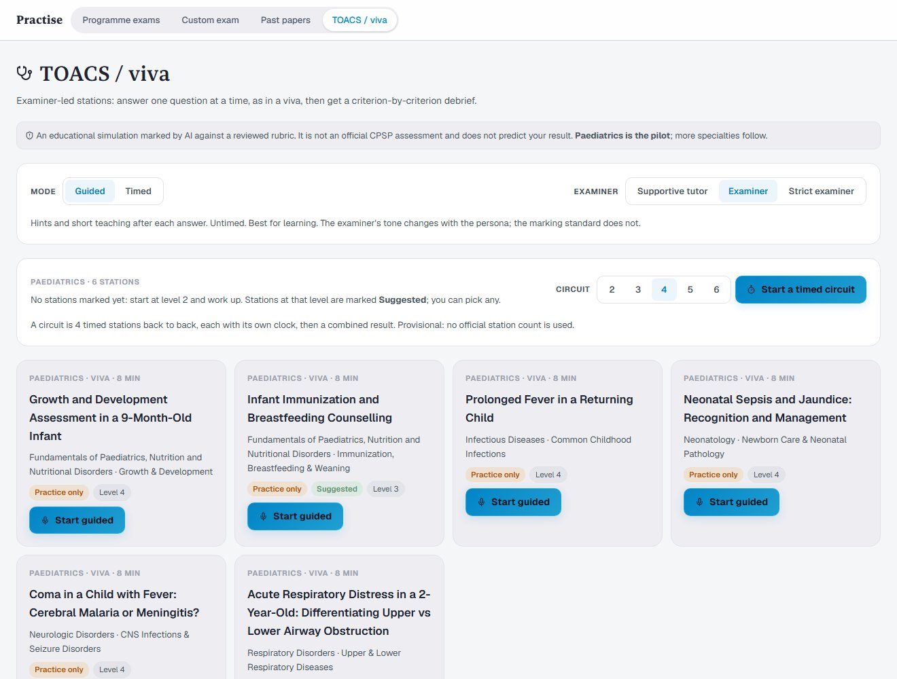

Ask anythingGet the book
Get the book
and the page.

medNAMA answers from standard textbooks with the page to prove it, then turns what you learn into the practice your exam asks for: MCQs, past papers, TOACS stations and viva.
Request accessA 2-year-old with fever for six days, red eyes and cracked lips. What must I not miss?
Built for PGETFCPS Part 1MBBSIMMFCPS-II





«Most question banks tell you the answer. medNAMA shows you where it’s written, then asks you again, just before you’d forget.»
The one rule medNAMA is built on
Two thirty-second films. Every frame is drawn in code and every sound is synthesised, and each cut went through rounds of review by separate critic agents before it shipped.
A night on call, a febrile two-year-old, and the syllabus that turns one ER note into a topic, a tutor and a TOACS station.
medNAMA isn’t on a public cloud. It runs on a self-hosted server we maintain ourselves, for a small group of trainees while it grows. Here’s whether it’s up right now, and how to join.
Open a short GitHub issue: your training stage, institution and exam. It’s public, so never include a phone number or password.
Request on GitHubWe reply on the issue and arrange your sign-in privately. Invites go out in small batches so every report can be read.
Go to mednama.rekorex.online on any device while the light is green. On your phone, add it to your home screen and it opens like an app.
Running with a small group of trainees today. The last steps are about how it reaches you: an app you install, the textbooks you choose, and the web version alongside.
Still have a question? Ask on GitHub.
On a private, self-hosted server that we maintain ourselves, not on a commercial cloud platform. That keeps the early-access build small and under our control. It also means it can be offline now and then for maintenance; the status light on this page checks it live.
Request an invite with a short GitHub issue. We reply there and arrange your sign-in privately. Then open mednama.rekorex.online and sign in.
Candidates preparing for PGET, FCPS Part 1 and MBBS exams, with each paper’s official Table of Specifications built in. FCPS-II and IMM Paediatrics candidates can rehearse viva stations, as a pilot.
From a library of standard medical textbooks. Every textbook fact is cited with the book and page; anything beyond the books is labelled as AI knowledge, so you always know which is which.
Yes. Any AI can make mistakes, which is why medNAMA shows its sources and puts a Report button on every answer and question. Keys the textbooks contradict are flagged and reviewed.
No. It is an educational simulation: an AI examiner works from a reviewed station and marking scheme and quotes your answers for every mark. It does not predict a CPSP result.
No. They are questions recalled by candidates after each sitting, collected and matched across years. They show what tends to be asked, not CPSP’s official papers.
Pricing for the public launch is being finalised; the plan is per textbook pack, so you pay for the books you study from.